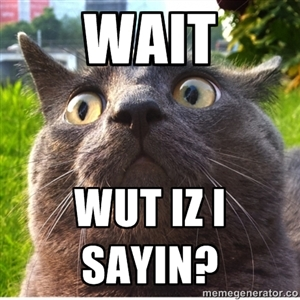
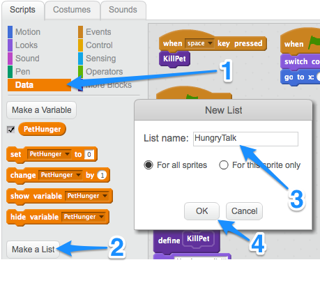

A Virtual LOLcat in Scratch
Table of Contents
1 Customising your Virtual Pet
At the moment your Virtual Pet is probably a little dull.
Try It
- You're going to need to experiment a little now.
- Try changing the starting values of the variables and the time it takes for the variables to change.
Run It
- Run your code and see whether the values you have chosen seem sensible
Test It
Badge It - Silver
- Have a friend try your Virtual Pet and give you some feedback.
- Have them email you their feedback.
- Write down the changes you will make in response to their feedback.
2 Getting the Pet to talk with an Infinite loop and Conditionals

- At the moment a user of the Virtual Pet only knows when the pet is hungry by watching the variable value change.
- From a User Experience (UX) point of view, this isn't great, so let's make the pet speak to us and tell us when it is hungry.
- We'll start off with a simple interaction, and then make it more
Learn It
- Sometimes in our programmes we want an infinite loop.
- An infinite loop is one that goes on forever (or until the program is quit).
- We can do this by using a
foreverloop in Scratch. - The code in a
foreverloop will run until the program ends.
Learn It
- Conditional statements are very important in programming.
- Conditional statements are like branches in the program. If a condition is true then one branch is taken, and if the condition is false another branch is taken.
- For instance, if you want to go to the shops then you might use the following conditional statement to make a decision on how to get there.
if the distance to the shops is less than a mile then
walk
else
take the bus
Code It
- We'll need a whole new script for this part, so create a new script on the Pet Sprite.
- Use the following code, and pay attention to the indentation, as this will help you with the nesting of the blocks.
when green flag clicked
forever
if PetHunger > 80 then
say "I CAN HAZ CHEEZBURGER?" for 2 secs
- If you struggle with the code, you can look at an example by clicking here, but have a go on your own first.
Run It
- Run your code and make sure the Pet speaks when it get's too hungry and needs feeding.
3 Adding some more things to say

- At the moment all the Pet says is "I CAN HAZ CHEEZBURGER?"
- Let's give it a few more things to say, and then choose what is spoken.
- To do this we'll need to use a list.
Learn It
- A list is a data structure.
- Data structures are a way of storing lots of data.
- You probably use lists all the time. Your planner probably contains lists of homeworks you have to do each day.
- We're going to create a list and fill it with items that the Pet can say.
Code It
- Click on the
DataPalatte - Click on
Make a List - Call the list
HungryTalk - Click
OK
 You should now see a list on the Stage.
Code It
- Click on the
+symbol - You can now add things for the Pet to say when it is hungry
- Add at least five things for the Pet to say, to tell the user that it is hungry.
- If you want to use LOLSPEAK, then this website might help you translate.
4 Choosing from the list randomly
Learn It
- We want to use a random number generator to choose what the Pet is going to say.
- Randomness and computers don't really work. Computers are really just a bunch of tiny switches and a data store, and making switches turn off and on randomly is something that is really tricky.
- We tend to call random numbers generated by a computer pseudo-random. This means pretend random. The numbers might appear to be random to humans, but in reality they have been chosen by the computer based on some form of input (often using the inbuilt clock that all computers have).
Code It
- We're now going to change our script a little to use a random number to speak from the list.
- Change this script;
when green flag clicked
forever
if PetHunger > 80 then
say "I CAN HAZ CHEEZBURGER?" for 2 secs
-So it looks like this
when green flag clicked
forever
if PetHunger > 80 then
say (item (pick random 1 to (length of HungryTalk)) of HungryTalk) for 2 secs
- I've used brackets to indicate the nesting of blocks, but if you get stuck then you can see an example here.
Run It
- Run your code and make sure that it works; picking a random element from your list each time.
5 Doing it again and again and again
Badge It
- To earn your next badge you need to set it all up for Tiredness, Happiness and Thirst.
- Make sure that you create lists for each of the different variables, so the pet can tell the user what is wrong.
- Make sure you have at least five elements in each list.
- You'll receive a Silver, Gold or Platinum badge, depending on how many of the scripts you manage to set up.
- Take a screenshot of your scripts when you have completed them.